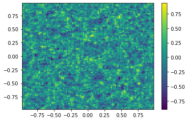

Pattern Formation PDE – Finite Difference¶
[16]:
import numpy as np
from math import sqrt
import scipy.integrate
import matplotlib.pyplot as plt
import matplotlib.animation as animation
from IPython.display import HTML
from scipy import sparse
from scipy.sparse.linalg import eigs, spsolve
from tqdm.notebook import trange, tqdm
from nodepy.runge_kutta_method import *
We are interested in solving numerically the following system of reaction-diffusion PDE:
\[\begin{split}\begin{cases}
\partial_t u = \delta_1(\partial^2_x u + \partial^2_y u)+\alpha u(1-\tau_1v^2)+v(1-\tau_2u)\\\\
\partial_t v = \delta_2(\partial^2_x v + \partial^2_y v)+\beta v(1-\frac{\alpha\tau_1}{\beta}uv)+u(\gamma+\tau_2u)
\end{cases}\end{split}\]
and we can separate the diffusion terms from the reactions term, obtaining,
\[\begin{split}\begin{cases}
\partial_t u = \nabla^2\cdot u + f(u,v) \\\\
\partial_t v = \nabla^2\cdot v + g(u,v)
\end{cases}\end{split}\]
where the functions \(f\) and \(g\) are clearly defined as:
\[\begin{split}\begin{gather}
f(u,v) = \alpha u(1-\tau_1v^2)+v(1-\tau_2u),\\
g(u,v) = \beta v(1-\frac{\alpha\tau_1}{\beta}uv)+u(\gamma+\tau_2u).
\end{gather}\end{split}\]
in particular we focus our attention on solving the above coupled system of autonomous ordinary differential equations reppresenting the reaction part of the Turing model. In particular we will solve these implementing a 4th order Runge-Kutta method.
[2]:
class ODESol:
def __init__(self,timesteps,timestep,U):
self.t = timesteps;
self.h = timestep;
self.y = U;
def RK4(F,T,U0,arg,N):
tt = np.linspace(T[0],T[1],N);
h = tt[1]-tt[0];
U = np.zeros([len(U0),N]);
U[:,0] = U0;
for i in trange(0,N-1):
Y1 = U[:,i];
Y2 = U[:,i] + 0.5*h*F(tt[i],Y1,arg);
Y3 = U[:,i] + 0.5*h*F(tt[i]+0.5*h,Y2,arg);
Y4 = U[:,i] + h*F(tt[i]+0.5*h,Y3,arg);
U[:,i+1] = U[:,i]+(h/6)*(F(tt[i],Y1,arg)+2*F(tt[i]+0.5*h,Y2,arg)+2*F(tt[i]+0.5*h,Y3,arg)+F(tt[i]+h,Y4,arg))
sol = ODESol(tt,h,U);
return sol;
Reaction¶
[3]:
Table = []
Table = Table + [{"delta1":0.00225,"delta2":0.0045,"tau1":0.02,"tau2":0.2,"alpha":0.899,"beta":-0.91,"gamma":-0.899}]
Table = Table + [{"delta1":0.001,"delta2":0.0045,"tau1":0.02,"tau2":0.2,"alpha":0.899,"beta":-0.91,"gamma":-0.899}]
Table = Table + [{"delta1":0.00225,"delta2":0.0045,"tau1":0.02,"tau2":0.2,"alpha":1.9,"beta":-0.91,"gamma":-1.9}]
Table = Table + [{"delta1":0.00225,"delta2":0.0045,"tau1":2.02,"tau2":0.0,"alpha":2.0,"beta":-0.91,"gamma":-2}]
Table = Table + [{"delta1":0.00105,"delta2":0.0021,"tau1":3.5,"tau2":0.0,"alpha":0.899,"beta":-0.91,"gamma":-0.899}]
Table = Table + [{"delta1":0.00225,"delta2":0.0045,"tau1":0.02,"tau2":0.2,"alpha":1.9,"beta":-0.85,"gamma":-1.9}]
Table = Table + [{"delta1":0.00225,"delta2":0.0005,"tau1":2.02,"tau2":0.0,"alpha":2.0,"beta":-0.91,"gamma":-2}]
def Reaction(t,x,parameters):
#The ODE is autonomus so we don't really need
#the depende on time.
u = x[0]; v = x[1]; #We grab the useful quantity.
d1 = parameters["delta1"]; d2 = parameters["delta2"];
t1 = parameters["tau1"]; t2 = parameters["tau2"];
a = parameters["alpha"]; b = parameters["beta"]; g = parameters["gamma"];
du = a*u*(1-t1*(v**2))+v*(1-t2*u);
dv = b*v*(1+(a*t1/b)*(u*v))+u*(g+t2*v);
return np.array([du,dv])
[4]:
t0 = 0. # Initial time
u0 = np.array([0.5,0.5])# Initial values
tfinal = 100. # Final time
dt_output=0.1# Interval between output for plotting
N=int(tfinal/dt_output) # Number of output times
print(N)
tt=np.linspace(t0,tfinal,N) # Output times
ODE = RK4(Reaction,[t0,tfinal],u0,Table[6],N);
uu=ODE.y
plt.plot(tt,uu[0,:],tt,uu[1,:])
plt.legend(["u","v"])
1000
[4]:
<matplotlib.legend.Legend at 0x7f32bbb97940>
Diffusion¶
[5]:
def laplacian_1D(m):
em = np.ones(m)
e1=np.ones(m-1)
A = (sparse.diags(-2*em,0)+sparse.diags(e1,-1)+sparse.diags(e1,1))/((2/(m+1))**2);
A = A.tocsr();
A[0,-1]=1/((2/(m+1))**2);
A[-1,0]=1/((2/(m+1))**2);
return A;
[6]:
plt.spy(laplacian_1D(4))
/home/uzerbinati/.local/lib/python3.8/site-packages/scipy/sparse/_index.py:82: SparseEfficiencyWarning: Changing the sparsity structure of a csr_matrix is expensive. lil_matrix is more efficient.
self._set_intXint(row, col, x.flat[0])
[6]:
<matplotlib.lines.Line2D at 0x7f32bb1c5d90>
[7]:
def laplacian_2D(m):
I = np.eye(m)
A = laplacian_1D(m)
return sparse.kron(A,I) + sparse.kron(I,A)
[8]:
plt.spy(laplacian_2D(4))
[8]:
<matplotlib.lines.Line2D at 0x7f32bb1ad6d0>
[9]:
m=100
x=np.linspace(-1,1,m+2); x=x[1:-1]
y=np.linspace(-1,1,m+2); y=y[1:-1]
print(x[1]-x[0])
X,Y=np.meshgrid(x,y)
A=laplacian_2D(m)
plt.spy(sparse.bmat([[2*A,None],[None,1*A]]))
0.01980198019801982
[9]:
<matplotlib.lines.Line2D at 0x7f32bb12d5b0>
[10]:
def Diffusion(t,x,parameters):
B = sparse.bmat([[parameters["delta1"]*A,None],[None,parameters["delta2"]*A]]);
return B*x;
#Generating the initial data
mu, sigma = 0, 0.5 # mean and standard deviation
u0 = np.random.normal(mu, sigma,m**2);
v0 = np.random.normal(mu, sigma,m**2)
#Plotting the initial data
plt.figure()
U0=u0.reshape([m,m])
plt.pcolor(X,Y,U0)
plt.colorbar();
plt.figure()
V0=v0.reshape([m,m])
plt.pcolor(X,Y,V0)
plt.colorbar();
<ipython-input-10-5d9199957f96>:11: MatplotlibDeprecationWarning: shading='flat' when X and Y have the same dimensions as C is deprecated since 3.3. Either specify the corners of the quadrilaterals with X and Y, or pass shading='auto', 'nearest' or 'gouraud', or set rcParams['pcolor.shading']. This will become an error two minor releases later.
plt.pcolor(X,Y,U0)
<ipython-input-10-5d9199957f96>:15: MatplotlibDeprecationWarning: shading='flat' when X and Y have the same dimensions as C is deprecated since 3.3. Either specify the corners of the quadrilaterals with X and Y, or pass shading='auto', 'nearest' or 'gouraud', or set rcParams['pcolor.shading']. This will become an error two minor releases later.
plt.pcolor(X,Y,V0)
[11]:
TIndex = 0;
t0 = 0.0 # Initial time
tfinal = 0.1 # Final time
dt_output=0.021 # Interval between output for plotting
N=int(tfinal/dt_output) # Number of output times
print("CFL suggested time step",(2.5*(0.0198)**2)/(8*max(Table[TIndex]["delta1"],Table[TIndex]["delta2"])));
#ODE = scipy.integrate.solve_ivp(Diffusion,[t0,tfinal],np.append(u0,v0,axis=0),args=[Table[TIndex]],method='RK45',t_eval=tt,atol=1.e-10,rtol=1.e-10);
ODE = RK4(Diffusion,[t0,tfinal],np.append(u0,v0,axis=0),Table[TIndex],N);
uu=ODE.y
print("Step size of the Method",ODE.h);
print(ODE.h*eigs(sparse.bmat([[Table[TIndex]["delta1"]*A,None],[None,Table[TIndex]["delta2"]*A]]),k=10)[0])
plt.figure()
RK44 = loadRKM('RK44')
RK44.plot_stability_region(bounds=[-5,1,-5,5])
plt.plot(ODE.h*eigs(sparse.bmat([[Table[TIndex]["delta1"]*A,None],[None,Table[TIndex]["delta2"]*A]]),k=10)[0].real,ODE.h*eigs(sparse.bmat([[Table[TIndex]["delta1"]*A,None],[None,Table[TIndex]["delta2"]*A]]),k=10)[0].imag,"b*")
CFL suggested time step 0.02722500000000001
Step size of the Method 0.03333333333333333
[-3.0603 +0.j -3.0587903 +0.j -3.0587903 +0.j -3.0572806 +0.j
-3.0572806 +0.j -3.0587903 +0.j -3.0587903 +0.j -3.0572806 +0.j
-3.0572806 +0.j -3.05426716+0.j]
[11]:
[<matplotlib.lines.Line2D at 0x7f32ba2121f0>]
<Figure size 432x288 with 0 Axes>
[12]:
ut = uu[0:m**2,-1];
vt = uu[m**2:,-1];
Ut=ut.reshape([m,m])
plt.pcolor(X,Y,Ut)
plt.colorbar();
plt.figure()
Vt=vt.reshape([m,m])
plt.pcolor(X,Y,Vt)
plt.colorbar();
<ipython-input-12-14a28ac5572b>:4: MatplotlibDeprecationWarning: shading='flat' when X and Y have the same dimensions as C is deprecated since 3.3. Either specify the corners of the quadrilaterals with X and Y, or pass shading='auto', 'nearest' or 'gouraud', or set rcParams['pcolor.shading']. This will become an error two minor releases later.
plt.pcolor(X,Y,Ut)
<ipython-input-12-14a28ac5572b>:8: MatplotlibDeprecationWarning: shading='flat' when X and Y have the same dimensions as C is deprecated since 3.3. Either specify the corners of the quadrilaterals with X and Y, or pass shading='auto', 'nearest' or 'gouraud', or set rcParams['pcolor.shading']. This will become an error two minor releases later.
plt.pcolor(X,Y,Vt)
Reaction-Diffusion¶
[13]:
def ReactionDiffusion(t,x,parameters):
u = x[0:m**2]; v = x[m**2:]; #We grab the useful quantity.
d1 = parameters["delta1"]; d2 = parameters["delta2"];
t1 = parameters["tau1"]; t2 = parameters["tau2"];
a = parameters["alpha"]; b = parameters["beta"]; g = parameters["gamma"];
#Diffusion
B = sparse.bmat([[parameters["delta1"]*A,None],[None,parameters["delta2"]*A]]);
#Reaction
du = a*u*(1-t1*(v**2))+v*(1-t2*u);
dv = b*v*(1+(a*t1/b)*(u*v))+u*(g+t2*v);
b = np.append(du,dv,axis=0);
return B*x+b;
TIndex = 0;
t0 = 0.0 # Initial time
tfinal = 150 # Final time
dt_output=0.0065 # Interval between output for plotting
N=int(tfinal/dt_output) # Number of output times
#ODE = scipy.integrate.solve_ivp(Diffusion,[t0,tfinal],np.append(u0,v0,axis=0),args=[Table[TIndex]],method='RK45',t_eval=tt,atol=1.e-10,rtol=1.e-10);
ODE = RK4(ReactionDiffusion,[t0,tfinal],np.append(u0,v0,axis=0),Table[TIndex],N);
uu=ODE.y
print("Step size of the Method",ODE.h);
print(ODE.h*eigs(sparse.bmat([[Table[TIndex]["delta1"]*A,None],[None,Table[TIndex]["delta2"]*A]]),k=10)[0])
plt.figure()
RK44 = loadRKM('RK44')
RK44.plot_stability_region(bounds=[-5,1,-5,5])
plt.plot(ODE.h*eigs(sparse.bmat([[Table[TIndex]["delta1"]*A,None],[None,Table[TIndex]["delta2"]*A]]),k=10)[0].real,ODE.h*eigs(sparse.bmat([[Table[TIndex]["delta1"]*A,None],[None,Table[TIndex]["delta2"]*A]]),k=10)[0].imag,"b*")
Step size of the Method 0.0065005417118093175
[-0.59680823+0.j -0.59651382+0.j -0.59651382+0.j -0.5962194 +0.j
-0.5962194 +0.j -0.59651382+0.j -0.59651382+0.j -0.5962194 +0.j
-0.5962194 +0.j -0.59563173+0.j]
[13]:
[<matplotlib.lines.Line2D at 0x7f32b96476d0>]
<Figure size 432x288 with 0 Axes>
[14]:
ut = uu[0:m**2,-1];
vt = uu[m**2:,-1];
Ut=ut.reshape([m,m])
plt.pcolor(X,Y,Ut)
plt.colorbar();
plt.figure()
Vt=vt.reshape([m,m])
plt.pcolor(X,Y,Vt)
plt.colorbar();
<ipython-input-14-14a28ac5572b>:4: MatplotlibDeprecationWarning: shading='flat' when X and Y have the same dimensions as C is deprecated since 3.3. Either specify the corners of the quadrilaterals with X and Y, or pass shading='auto', 'nearest' or 'gouraud', or set rcParams['pcolor.shading']. This will become an error two minor releases later.
plt.pcolor(X,Y,Ut)
<ipython-input-14-14a28ac5572b>:8: MatplotlibDeprecationWarning: shading='flat' when X and Y have the same dimensions as C is deprecated since 3.3. Either specify the corners of the quadrilaterals with X and Y, or pass shading='auto', 'nearest' or 'gouraud', or set rcParams['pcolor.shading']. This will become an error two minor releases later.
plt.pcolor(X,Y,Vt)
Efficient Reaction Diffusion¶
[15]:
def Reaction(t,x,parameters):
u = x[0:m**2]; v = x[m**2:]; #We grab the useful quantity.
d1 = parameters["delta1"]; d2 = parameters["delta2"];
t1 = parameters["tau1"]; t2 = parameters["tau2"];
a = parameters["alpha"]; b = parameters["beta"]; g = parameters["gamma"];
#Reaction
du = a*u*(1-t1*(v**2))+v*(1-t2*u);
dv = b*v*(1+(a*t1/b)*(u*v))+u*(g+t2*v);
b = np.append(du,dv,axis=0);
return b;
def SplitSolver(F,T,U0,arg,N):
tt = np.linspace(T[0],T[1],N);
h = tt[1]-tt[0];
U = np.zeros([len(U0),N]);
U[:,0] = U0;
for i in trange(0,N-1):
B = sparse.bmat([[arg["delta1"]*A,None],[None,arg["delta2"]*A]]);
UStar = spsolve((sparse.identity(B.shape[0])-h*B),U[:,i])
Y1 = UStar;
Y2 = UStar + 0.5*h*F(tt[i],Y1,arg);
Y3 = UStar + 0.5*h*F(tt[i]+0.5*h,Y2,arg);
Y4 = UStar + h*F(tt[i]+0.5*h,Y3,arg);
U[:,i+1] = UStar+(h/6)*(F(tt[i],Y1,arg)+2*F(tt[i]+0.5*h,Y2,arg)+2*F(tt[i]+0.5*h,Y3,arg)+F(tt[i]+h,Y4,arg))
if (i%100==0):
Ut=U[0:m**2,i+1].reshape([m,m])
plt.pcolor(X,Y,Ut)
plt.colorbar();
plt.show()
sol = ODESol(tt,h,U);
return sol;
TIndex = 3;
t0 = 0.0 # Initial time
tfinal = 150 # Final time
dt_output=0.1 # Interval between output for plotting
N=int(tfinal/dt_output) # Number of output times
#ODE = scipy.integrate.solve_ivp(Diffusion,[t0,tfinal],np.append(u0,v0,axis=0),args=[Table[TIndex]],method='RK45',t_eval=tt,atol=1.e-10,rtol=1.e-10);
ODE = SplitSolver(Reaction,[t0,tfinal],np.append(u0,v0,axis=0),Table[TIndex],N);
uu=ODE.y
ut = uu[0:m**2,-1];
vt = uu[m**2:,-1];
Ut=ut.reshape([m,m])
plt.pcolor(X,Y,Ut)
plt.colorbar();
plt.figure()
Vt=vt.reshape([m,m])
plt.pcolor(X,Y,Vt)
plt.colorbar();
<ipython-input-15-45dc21ecdffc>:26: MatplotlibDeprecationWarning: shading='flat' when X and Y have the same dimensions as C is deprecated since 3.3. Either specify the corners of the quadrilaterals with X and Y, or pass shading='auto', 'nearest' or 'gouraud', or set rcParams['pcolor.shading']. This will become an error two minor releases later.
plt.pcolor(X,Y,Ut)

<ipython-input-15-45dc21ecdffc>:42: MatplotlibDeprecationWarning: shading='flat' when X and Y have the same dimensions as C is deprecated since 3.3. Either specify the corners of the quadrilaterals with X and Y, or pass shading='auto', 'nearest' or 'gouraud', or set rcParams['pcolor.shading']. This will become an error two minor releases later.
plt.pcolor(X,Y,Ut)
<ipython-input-15-45dc21ecdffc>:46: MatplotlibDeprecationWarning: shading='flat' when X and Y have the same dimensions as C is deprecated since 3.3. Either specify the corners of the quadrilaterals with X and Y, or pass shading='auto', 'nearest' or 'gouraud', or set rcParams['pcolor.shading']. This will become an error two minor releases later.
plt.pcolor(X,Y,Vt)